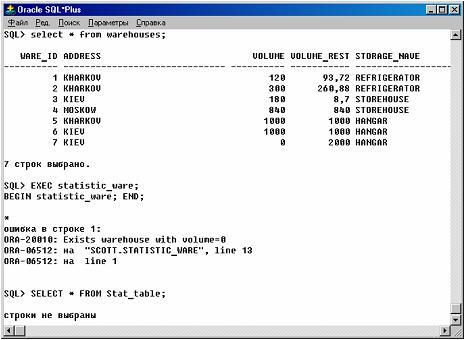

Обработчики исключений
Когда возбуждается исключение, нормальное исполнение вашего блока PL/SQL или подпрограммы останавливается, и управление передается на обработчик исключений этого блока или подпрограммы, что оформляется следующим образом:
...
EXCEPTION
WHEN имя_исключения1 THEN
-- обработчик ряд_предложений1
WHEN имя_исключения2 THEN
-- другой обработчик ряд_предложений2
...
WHEN OTHERS THEN
-- необязательный обработчик ряд_предложений3
END;
Чтобы перехватывать возбуждаемые исключения, вы должны написать обработчики исключений. Каждый обработчик состоит, во-первых, из фразы WHEN, которая специфицирует имя исключения, и, во-вторых, из последовательности предложений, которые будут выполняться при возбуждении этого исключения. Эти предложения завершат исполнение блока или подпрограммы при исключении - управление больше не вернется в точку, где возникло исключение. Иными словами, вы не сможете возобновить работу с того места, где возникло исключение.
Необязательный обработчик исключений OTHERS - всегда последний обработчик исключений в блоке; он действует как обработчик для всех исключений, не перечисленных персонально в этом блоке. Таким образом, блок или подпрограмма может содержать только один обработчик OTHERS.
Рассмотрим следующий пример. Использование обработчика OTHERS гарантирует, что ни одно исключение не пройдет необработанным. |  |
|---|
...
EXCEPTION
WHEN ... THEN
-- обработать ошибку
WHEN ... THEN
-- обработать ошибку
WHEN ... THEN
-- обработать ошибку
WHEN OTHERS THEN
-- обработать все прочие ошибки
END;
В следующем примере, процедура заполняет таблицу статистикой о том, на сколько процентов загружены склады. Если исходный объем склада в таблице был определен как нулевой, возбуждается предопределенное исключение ZERO_DIVIDE. Это останавливает нормальное исполнение процедуры и передает управление на обработчик исключений. | |
|---|
CREATE OR REPLACE PROCEDURE statistic_ware IS
CURSOR c1 IS
SELECT ware_id, volume, volume_rest FROM warehouses;
vol NUMBER (6,2); -- переменная для подсчета процента занятости склада
BEGIN
FOR c1rec IN c1 LOOP
Vol:=(c1rec.volume- c1rec.volume_rest)/(c1rec.volume/100); -- может вызвать
-- ошибку " деление на 0"
INSERT INTO Stat_table VALUES (stat_CUR.NEXTVAL, c1rec.ware_id, vol, SYSDATE);
END LOOP ;
COMMIT;
EXCEPTION -- здесь начинаются обработчики исключений
WHEN ZERO _ DIVIDE THEN -- обрабатывает "деление на 0"
raise_application_error(-20010, Exists warehouse with volume=0');
WHEN OTHERS THEN -- обрабатывает все прочие ошибки
ROLLBACK;
END statistic _ ware ; -- здесь заканчиваются обработчики исключений и вся процедура
На рисунке 10 приведен пример экранной формы, демонстрирующий вызов процедуры statistic _ ware с обработкой исключительной ситуации.

Рисунок 10 - Обработка исключительной ситации
Необязательный обработчик OTHERS перехватывает все исключения, персонально не перечисленные в блоке.
Если вы хотите выполнять одну и ту же последовательность предложений для двух или более исключений, перечислите имена этих исключений в фразе WHEN, разделяя их ключевым словом OR, как показано ниже:
...
EXCEPTION
WHEN over_volume OR under_volume OR VALUE_ERROR THEN
-- обработать ошибку
...
END;
Если будет возбуждено любое из перечисленных в фразе WHEN исключений, соответствующий обработчик получит управление. Включение ключевого слова OTHERS в список имен исключений фразы WHEN НЕ ДОПУСКАЕТСЯ. Слово OTHERS может появиться только само по себе. Вы можете иметь сколько угодно обработчиков исключений, а каждый обработчик может ассоциировать последовательность предложений с любым списком исключений. Однако любое имя исключения может появиться лишь один раз в части обработки исключений блока или подпрограммы PL/SQL.
В обработчике исключений действуют обычные правила сферы видимости идентификаторов, определенные для переменных PL/SQL, так что обработчик может обращаться лишь к локальным и глобальным переменным. Однако, когда исключение возбуждается внутри курсорного цикла FOR, соответствующий курсор неявно закрывается перед вызовом обработчика. Поэтому значения явных атрибутов курсора НЕДОСТУПНЫ в обработчике.
Переходы в обработчик и из него
Предложение GOTO нельзя использовать для перехода в обработчик исключений либо для перехода из обработчика исключений в текущий блок.
Например, следующее предложение GOTO НЕЗАКОННО |
DECLARE
val NUMBER(6,2);
BEGIN
SELECT volume / volume_rest INTO val FROM warehouses WHERE ware_id=6;
-- может возникнуть ошибка деления на 0
<<label1>>
INSERT INTO stat VALUES (6, val);
EXCEPTION
WHEN ZERO_DIVIDE THEN
per := 0;
GOTO my _ label ; -- незаконный переход в текущий блок
END ;
Однако предложение GOTO можно использовать для перехода из обработчика исключения в окружающий блок.
Переобъявление предопределенных исключений
Вспомним, что PL/SQL объявляет свои предопределенные исключения глобально, в пакете STANDARD, так что вам не требуется объявлять их самим. Однако переобъявление предопределенного исключения не приведет к ошибке, так как ваше локальное объявление перекрывает глобальное внутреннее объявление.
Например, если вы объявите исключение с именем invalid_number, а затем PL/SQL внутренне возбудит предопределенное исключение INVALID_NUMBER, то обработчик, написанный вами для вашего invalid_number, не увидит внутреннего исключения. В таком случае вы должны обращаться к предопределенному исключению с помощью квалифицированной ссылки, как показывает следующий пример. | |
|---|
...
EXCEPTION
WHEN invalid_number OR STANDARD.INVALID_NUMBER THEN
-- обработать ошибку
...
END;
Использование EXCEPTION_INIT
Для обработки непоименованных внутренних исключений вы должны использовать обработчик OTHER либо прагму EXCEPTION_INIT. ПРАГМА - это директива (указание) компилятору. Прагмы (называемые также псевдоинструкциями) обрабатываются во время компиляции, а не во время выполнения. Они не изменяют смысла программы, а лишь поставляют информацию компилятору.
В PL/SQL, предопределенная прагма EXCEPTION_INIT сообщает компилятору имя исключения, которое вы ассоциируете с конкретным кодом ошибки ORACLE. Это позволяет вам обращаться к любому внутреннему исключению по имени, написав для него специальный обработчик.
Вы кодируете прагму EXCEPTION_INIT в декларативной части блока, подпрограммы или пакета PL/SQL, используя следующий синтаксис:
PRAGMA EXCEPTION_INIT(имя_исключения, код_ошибки_ORACLE);
Здесь имя_исключения - это имя исключения, ранее уже объявленного в этом блоке. Прагма должна появиться в той же декларативной части, что и соответствующее исключение, как показано в следующем примере: |
DECLARE
insufficient_privileges EXCEPTION;
PRAGMA EXCEPTION_INIT(insufficient_privileges, -1031);
-- ORACLE возвращает код ошибки -1031, если, например,
-- вы пытаетесь обновить таблицу, для которой имеете
-- лишь полномочия SELECT .
BEGIN
...
EXCEPTION
WHEN insufficient_privileges THEN
-- обработать ошибку
...
END;
Внутренние исключения возбуждаются неявно исполнительной системой, как и те пользовательские исключения, которые вы ассоциировали с кодами ошибок ORACLE с помощью прагмы EXCEPTION_INIT. Однако остальные пользовательские исключения должны возбуждаться явно, посредством предложений RAISE.
Использование предложения RAISE
Блоки и подпрограммы PL/SQL должны явно возбуждать исключение лишь в том случае, когда ошибка делает невозможным или нежелательным продолжение обработки. Вы можете закодировать предложение RAISE для данного исключения в любом месте сферы этого исключения.
В следующем примере вы возбуждаете в вашем блоке PL/SQL пользовательское исключение с именем out_of_ volume. | |
|---|
DECLARE
out_of_volume EXCEPTION;
my_volume NUMBER(6,2);
BEGIN
...
IF my_volume > 1000 THEN
RAISE out_of_volume;
END IF;
...
EXCEPTION
WHEN out_of_volume THEN
-- обработать ошибку
END;
Вы можете также явно возбуждать предопределенное исключение, как показывает следующий пример:
RAISE INVALID_NUMBER;
Это позволяет вам использовать обработчики, созданные для предопределенных исключений, для обработки других ошибок, как показывает следующий пример:
DECLARE
Ware_id_my NUMBER(4);
...
BEGIN
...
IF Ware_id_my NOT IN (1, 2, 3) THEN
RAISE INVALID_NUMBER;
END IF;
...
EXCEPTION
WHEN INVALID_NUMBER THEN
ROLLBACK;
...
END;
Рассмотрим пример использования RAISE
Доработаем процедуру buy _ goods и определим в ней исключительную ситуацию, которая возбуждается при продаже товаров оптом, если количество продаваемого товара оказывается меньшим границы в 10 единиц. Такую продажу нужно запретить - это не опт, а пользователя, проводящего эту операцию, зафиксировать в таблице Retail _ buy ( Buy _ id , goods _ id , quantity , Date _ buy , Seller ). | |
|---|
CREATE OR REPLACE PROCEDURE buy_goods (good_id1 NUMBER, quantity1 NUMBER) IS
Storage _ id 1 NUMBER (4); -- переменная для номера партии
ware _ id 1 NUMBER (4); -- переменная для номера склада
vol NUMBER (6,2); -- переменная для объема единицы товара
Small _ quantity EXCEPTION ;
BEGIN
-- проверка на исключительную ситуацию
IF (quantity1<10) THEN
RAISE Small_quantity;
END IF;
SELECT storage_id, ware_id INTO storage_id1, ware_id1 FROM storages WHERE
begin_time IN (SELECT MIN(begin_time) FROM storages
WHERE Goods_id=Good_id1 AND quantity>quantity1);
-- определяем объем единицы покупаемого товара
SELECT volume INTO vol FROM goods WHERE goods_id=good_id1;
-- фиксируем покупку части партии товара
UPDATE storages SET quantity = quantity - quantity1 WHERE storage_id = storage_id1;
--фиксируем освобождение соответствующего объема на складе
UPDATE warehouses SET volume_rest = volume_rest + quantity1* vol WHERE ware_id=ware_id1;
EXCEPTION
WHEN NO_DATA_FOUND THEN
INSERT INTO opt_audit VALUES (OPT_CUR.NEXTVAL, good_id1, 'No such goods');
COMMIT;
WHEN Small_quantity THEN
INSERT INTO Retail_buy VALUES (buy_CUR.NEXTVAL, good_id1, quantity1, SYSDATE, USER);
COMMIT;
END buy_goods;
Как распространяются исключения
Что происходит, если в текущем блоке нет обработчика исключений для возбужденного исключения? В этом случае блок завершается, а исключение ПРОДВИГАЕТСЯ в окружающий блок. Теперь окружающий блок становится текущим, а исключение воспроизводит себя в нем. Если обработчик исключения не находится и в этом блоке, процесс поиска повторяется. Если текущий блок не имеет окружающего блока, PL/SQL возвращает ошибку "необрабатываемое исключение" в хост-окружение.
Использование процедуры raise_application_error
Пакет с именем DBMS_STANDARD, входящий в состав Процедурного расширения базы данных, предоставляет средства языка, которые помогают вашему приложению взаимодействовать с ORACLE. Этот пакет включает процедуру raise_application_error, которая позволяет вам выдавать определенные вами сообщения об ошибках из хранимой подпрограммы или триггера базы данных. Вызывающее приложение получает при этом исключение PL/SQL, которое оно может обработать с помощью функций сообщений об ошибках SQLCODE и SQLERRM. Более того, оно может использовать прагму EXCEPTION_INIT, чтобы сопоставить специфические номера ошибок, которые возвращает raise_application_error, своим собственным исключениям.
Необработанные исключения
Как объяснялось выше, при невозможности найти обработчик для возбужденного исключения PL/SQL возвращает ошибку "необработанное исключение" в хост-окружение, которое определяет, что делать дальше.
Например, в среде прекомпиляторов ORACLE выполняется откат всех изменений в базе данных, сделанных сбившимся предложением SQL или блоком PL/SQL.
Необработанные исключения могут влиять на транзакции. Перед выполнением блока PL/SQL или хранимой подпрограммы ORACLE устанавливает неявную точку сохранения. Если блок или подпрограмма сбивается в результате необработанного исключения, ORACLE осуществляет откат к этой точке сохранения. Тем самым отменяется вся работа, проделанная блоком или подпрограммой.
Необработанные исключения могут также влиять на подпрограммы. При успешном выходе из подпрограммы PL/SQL присваивает значения параметрам OUT. Однако, если вы выходите в результате необработанного исключения, значения параметрам OUT НЕ присваиваются. Кроме того, как уже сказано, если подпрограмма сбивается в результате необработанного исключения, ORACLE неявно отменяет ее работу. Однако, если подпрограмма выдала COMMIT до возбуждения необрабатываемого исключения, отменена будет лишь неподтвержденная часть работы.
Вы можете избежать необрабатываемых исключений, кодируя обработчик OTHERS на самом верхнем уровне каждого блока PL/SQL и подпрограммы.
Полезные приемы
В этом разделе вы узнаете два полезных приема: как продолжить работу после исключения и как повторить транзакцию. |  |
|---|
Продолжение работы после возбуждения исключения

Повторение транзакции
Использование функций SQLCODE и SQLERRM
В обработчике исключений можно использовать функции SQLCODE и SQLERRM, чтобы узнать, какая ошибка произошла и получить сообщение об ошибке.
Для внутренне определенных исключений, SQLCODE возвращает номер ошибки ORACLE, передавшей управление обработчику. Этот номер отрицателен, исключая случай ошибки ORACLE "no data found", когда SQLCODE возвращает +100.
SQLERRM возвращает сообщение, ассоциированное с возникшей ошибкой ORACLE. Это сообщение начинается с кода ошибки ORACLE.
Для пользовательских исключений, SQLCODE возвращает +1, а SQLERRM возвращает сообщение User-Defined Exception, если вы не использовали прагму EXCEPTION_INIT, чтобы ассоциировать ваше исключение с номером ошибки ORACLE; в этом случае SQLCODE возвращает этот номер ошибки, а SQLERRM возвращает соответствующее сообщение об ошибке. Заметим, что максимальная длина сообщения ORACLE об ошибке составляет 512 символов, включая код ошибки, вложенные сообщения и подстановки, такие как имена таблиц и столбцов. Если не возбуждено никакое исключение, то SQLCODE возвращает 0, а SQLERRM возвращает сообщение ORA-0000: normal, successful completion
Вы можете передать функции SQLERRM номер ошибки; в этом случае SQLERRM возвратит сообщение, ассоциированное с этим номером ошибки.
Номер ошибки, передаваемый SQLERRM, должен быть отрицателен. Нулевой код, передаваемый SQLERRM, всегда возвращает сообщение
ORA-0000: normal, successful completion
Передача SQLERRM положительного номера ошибки (за исключением +100) всегда возвратит сообщение
User-Defined Exception
а передача SQLERRM кода +100 возвратит сообщение
ORA -01403: no data found .
В следующем примере, SQLERRM возвратит не то, что ожидалось, потому что передается положительное значение вместо отрицательного:
DECLARE
msg CHAR(100);
BEGIN
FOR num IN 1..9999 LOOP
msg := SQLERRM(num); -- надо задавать SQLERRM(-num)
INSERT INTO errors VALUES (msg);
END LOOP;
END;
Вы не можете использовать функции SQLCODE и SQLERRM непосредственно в предложениях SQL. Например, следующее предложение незаконно:
INSERT INTO errors VALUES (SQLCODE, SQLERRM);
Вместо этого вы должны присвоить значения этих функций локальным переменным, а затем использовать эти переменные в ваших предложениях SQL, как показывает следующий пример:
DECLARE
err_num NUMBER;
err_msg CHAR(100);
BEGIN
...
EXCEPTION
...
WHEN OTHERS THEN err_num := SQLCODE;
err_msg := SUBSTR(SQLERRM, 1, 100);
INSERT INTO errors VALUES (err_num, err_msg);
END;
Строковая функция SUBSTR() гарантирует, что возможное усечение при присваивании переменной err_msg не возбудит исключения VALUE_ERROR. Функции SQLCODE и SQLERRM особенно полезны в исключении OTHERS, потому что они позволяют установить, какое внутреннее исключение было возбуждено.
Повторное возбуждение исключения
Иногда вам требуется повторно возбудить исключение, т.е. сначала обработать его локально, а затем заставить его продвинуться в окружающий блок. Например, вы можете захотеть отменить транзакцию в текущем блоке, а потом зарегистрировать ошибку в окружающем блоке.
Чтобы повторно возбудить исключение, поместите предложение RAISE в локальный обработчик этого исключения, как показано в следующем примере:
DECLARE
out_of_volume EXCEPTION;
BEGIN
... ---------------- начало подблока -------------------------
BEGIN
...
IF ... THEN RAISE out_of_volume; -- возбудить исключение
END IF;
...
EXCEPTION
WHEN out_of_volume THEN -- обработать ошибку RAISE;
-- повторно возбудить текущее исключение ...
END; ---------------- конец подблока --------------------------
EXCEPTION
WHEN out_of_volume THEN -- обработать ошибку иным способом
END;
Если опустить имя исключения в предложении RAISE (что допускается только в обработчике исключений), то подразумевается текущее исключение
Исключения могут также возбуждаться некорректными выражениями инициализации в объявлениях.
Например, следующее объявление неявно возбуждает исключение VALUE_ERROR, потому что limit не может хранить числа, большие 999:
DECLARE
limit CONSTANT NUMBER(3):= 5000; -- возбуждает исключение VALUE_ERROR
BEGIN
...
EXCEPTION
WHEN VALUE _ ERROR THEN -- не перехватит это исключение
...
END;
Обработчики в текущем блоке не могут перехватывать исключений, возбужденных в объявлениях, потому что такое исключение НЕМЕДЛЕННО продвигается в окружающий блок.
Лишь одно исключение в каждый момент времени может быть активно в части обработки исключений блока или подпрограммы. Так, исключение, возбужденное внутри обработчика, немедленно продвигается в окружающий блок, который просматривается на предмет обнаружения обработчика для вновь возбужденного исключения. С этого момента исключение продвигается обычным образом.